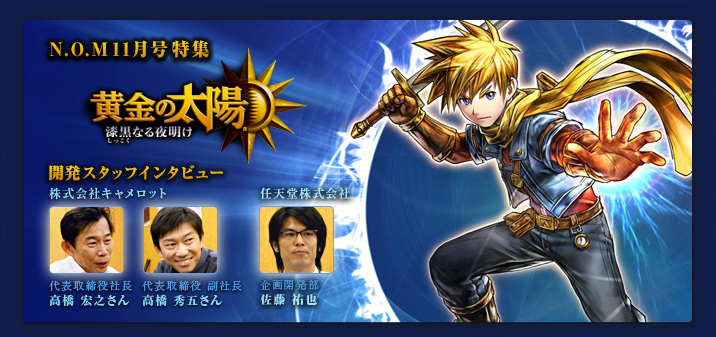

---
システム面について、本作はどのようなところが新しい見どころなのでしょうか？
高橋（宏）
よくRPGでお城があって、王様のところに行きさえすれば次に何をすればいいかわかるというのに違和感があったんです。自分とは関係なく人々が生活していて、その中からヒントを探し出すというのが本当の冒険だと考えていたんですね。そこで前作、相手の心を読む「リード」というエナジーを作りました。
この「リード」を使うタイミングを、本作では途中からにしています。
本当はそこに仕掛けがあるんですが……、それについてはまだ言えません（笑）。
実際にプレイしていただければ「なるほど！」と思っていただけるようになっていますよ。
この「リード」を使うタイミングを、本作では途中からにしています。
本当はそこに仕掛けがあるんですが……、それについてはまだ言えません（笑）。
実際にプレイしていただければ「なるほど！」と思っていただけるようになっていますよ。
---
「グリップ」などは本作で登場する新しいエナジーですね。
高橋（宏）
前作に「キャッチ」という、それに近いエナジーはあったんですが、より「手の代わりになる」ということの象徴として「グリップ」の効果を考えました。
プログラマーから「どうしてひとつのエナジーでそんなにいろんなことをできるようにするんですか！」と怒られるくらい、いろんなことができますし、ストーリー上でも重要なポイントで使うエナジーになっています。
プログラマーから「どうしてひとつのエナジーでそんなにいろんなことをできるようにするんですか！」と怒られるくらい、いろんなことができますし、ストーリー上でも重要なポイントで使うエナジーになっています。
---
遠くにあるモノを取るだけではなくて、いろんなことができますよね。
高橋（宏）
本作では、ひとつのエナジーをどのように使うか、実際に試してみながら考えるということをたくさんやってもらいたいんです。たとえば水たまりがある場合、凍らせて足場にしたり、乾かすと水が引いたり、水がないところに水を溜めたり……。プランナーたちの間でも、より深く考えて作るように意識していました。いろんな遊び方ができると飽きないですし。
また、ゲームが進行するにつれて自然にエナジーの使い方を覚え、次第に複雑になるようメリハリをつけることも、本作では特に意識しました。
「ベルフネ」という、何度も訪れることになる重要な街がストーリーの終盤にあるんですが、そこではゲーム中でたくさん試行錯誤した成果が試されることになります。ストーリー的にも、そこで一番の盛り上がりに向かっていきますので、「これをなんとかクリアしたい！」と思っていただけるんじゃないかなと。
また、ゲームが進行するにつれて自然にエナジーの使い方を覚え、次第に複雑になるようメリハリをつけることも、本作では特に意識しました。
「ベルフネ」という、何度も訪れることになる重要な街がストーリーの終盤にあるんですが、そこではゲーム中でたくさん試行錯誤した成果が試されることになります。ストーリー的にも、そこで一番の盛り上がりに向かっていきますので、「これをなんとかクリアしたい！」と思っていただけるんじゃないかなと。
高橋（秀）
作っている側としては、あれもこれも入れようとやっていると、知らないうちにドンドン難しくなっていくものなんです。そこで、今回スタッフの間では、「ゲーム初心者の方でも楽しめるRPGを目指そう」と話していました。
エナジーの使い方やインターフェイスの部分は、制作中もドンドン変わっていきましたね。タッチペンではじくような操作は初心者にはわかりにくいと考えて外したり、設定関連のメニューを左に、動作関連のメニューを右に統一したり。
エナジーの使い方やインターフェイスの部分は、制作中もドンドン変わっていきましたね。タッチペンではじくような操作は初心者にはわかりにくいと考えて外したり、設定関連のメニューを左に、動作関連のメニューを右に統一したり。
高橋（宏）
続編というと、前作のファンの方々にはより楽しんでもらえますが、はじめての方にはハードルが高くなってしまう部分があると思います。そこで、前作までのストーリーにスムーズに入っていけるよう、さまざまな工夫をしています。「用語辞典」も象徴的な機能ですね。
佐藤
ゲーム中のテキストに、インターネットのリンクみたいに下線が引かれた単語が出てくるんですよ。それをタッチすると用語の解説がすぐに出てくるんですよね。詳しく知りたい用語が簡単に調べられて便利なんです。
高橋（秀）
わりと軽い気持ちで入れましょうということになったんですが、これが思いのほか大変で（笑）。でも、作る側が大変なものというのは、ユーザーの方々にとっては非常に便利ということが多いですし。
高橋（宏）
はじめての方にとっては少し難しい謎解きのヒントも、用語辞典の中にあったりします。セーブやロードの時に、プレイしたところまでのあらすじが出るようにもしています。
佐藤
忙しくてしばらくプレイしていなくて、再開する時って、結構どこまでやったか忘れてしまっていたりしますからね。そんな時はあらすじを見ていただくと次の目的を思い出せると思います。
高橋（秀）
あとは、漢字にルビを表示できるというのは、日本版のみのシステムです。
佐藤
「ルビを表示しない」という設定にしていても、読み方を知りたい漢字をタッチすればすぐにルビが表示されるようになっているのも便利ですよね。
高橋（秀）
ちょっとお遊び的ですが、カタカナ英語で「エンプティ」というのにも「空」というルビが出るようにしていたりします。ゲーム内での独特な言い回しも、ルビ機能で解説されているものもあります。要所要所で出てくるチュートリアルや『伝説の絵本』も 、特に意識せずストーリーにすんなり入っていけるようにできたんじゃないかなと思っています。
高橋（宏）
ストーリーも、いきなり重厚なテーマを押しつけることもなく、最初は「アレを取ってきて」みたいなところからはじまりますしね。
---
「お使い」みたいな話からスタートなのに、いつの間にか大きな話になってしまいますよね（笑）。
プレイレポート |
|
開発スタッフインタビュー |
1. 8年ぶりの続編 |